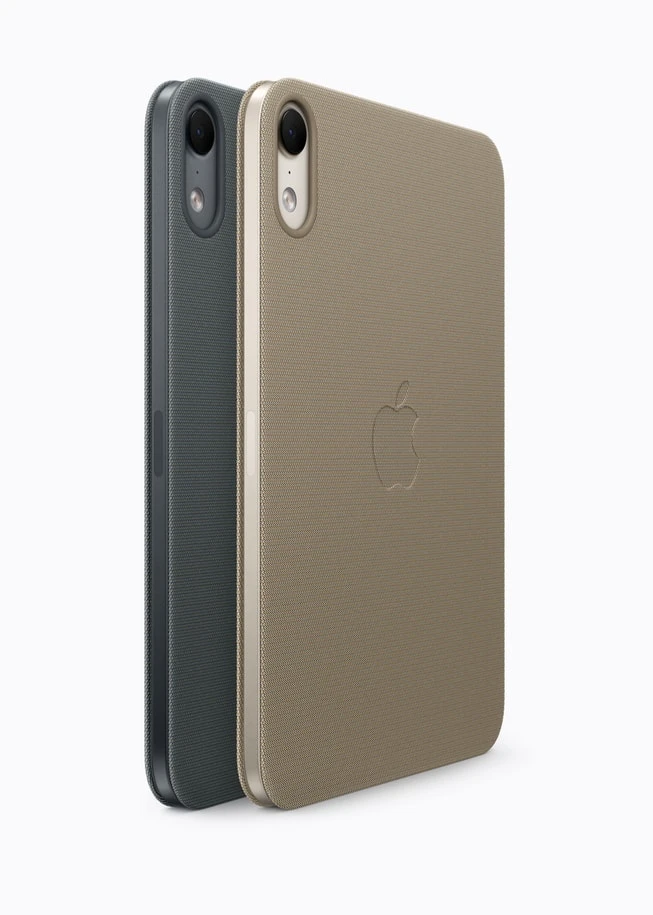

Apple · Field note 054
iPad mini gains OLED, A20 Pro, and water resistance
Apple’s compact tablet starts at $699, with pre-orders October 28 and availability November 6.

Apple has announced a redesigned iPad mini with an 8.5-inch OLED screen, A20 Pro chip, and a 5.4 mm body. Midnight and starlight finishes accompany an IP67 rating for water and dust resistance.
The display offers an optional nano-texture finish. A landscape-edge 12MP Center Stage camera and a redesigned Acoustic Display speaker system round out the hardware changes.
A new TechWoven Smart Folio comes in navy blue and taupe for $79. The tablet supports Apple Pencil Pro and Apple Pencil (USB-C), sold separately.
U.S. prices start at $699 for Wi-Fi and $849 for cellular, with 128GB, 256GB, and 512GB options. Pre-orders open October 28; deliveries and store availability begin November 6.
Water resistance is not permanent, and Apple excludes liquid damage from warranty coverage.
